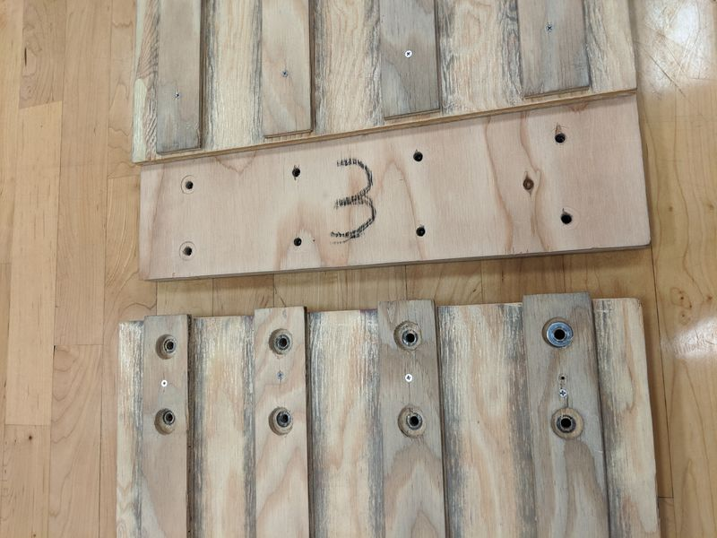
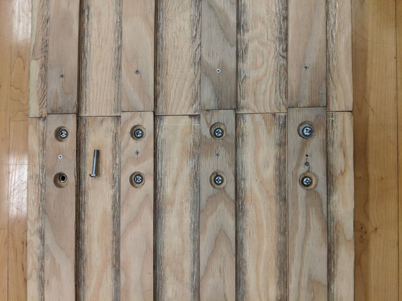
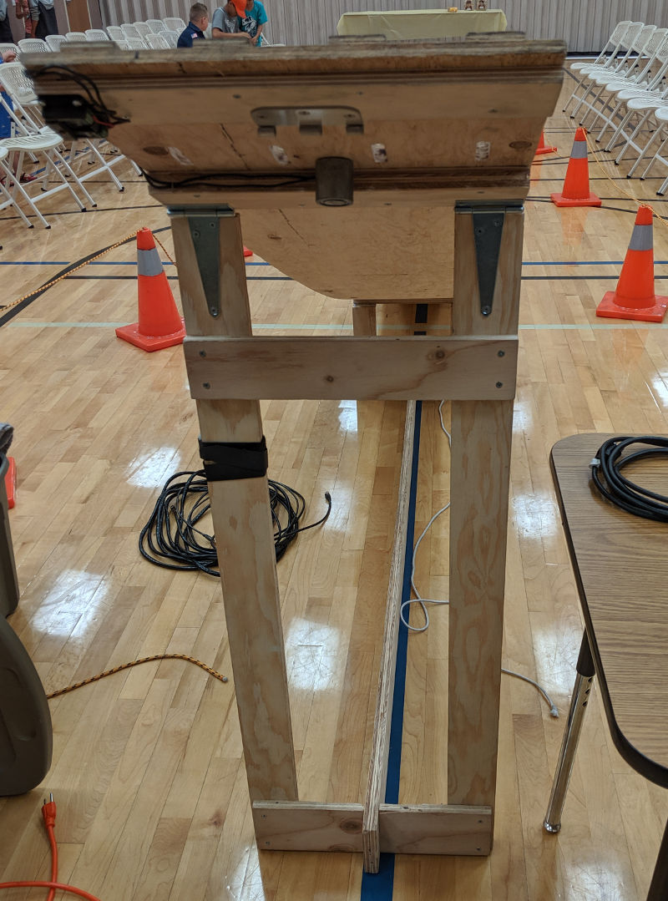
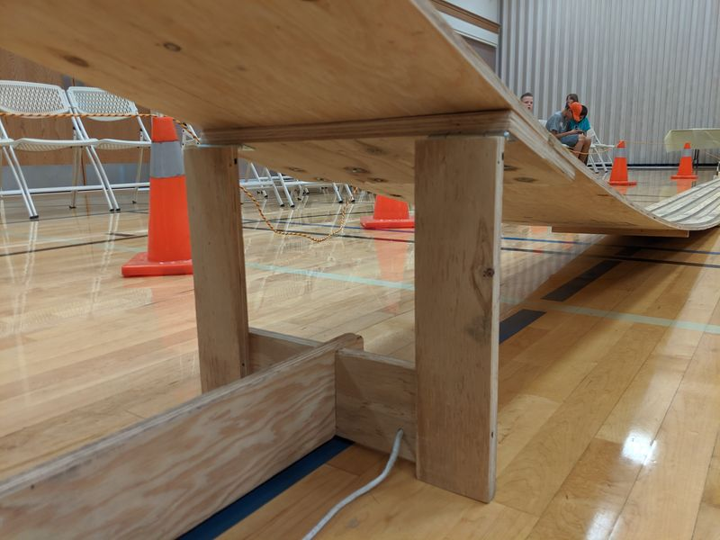
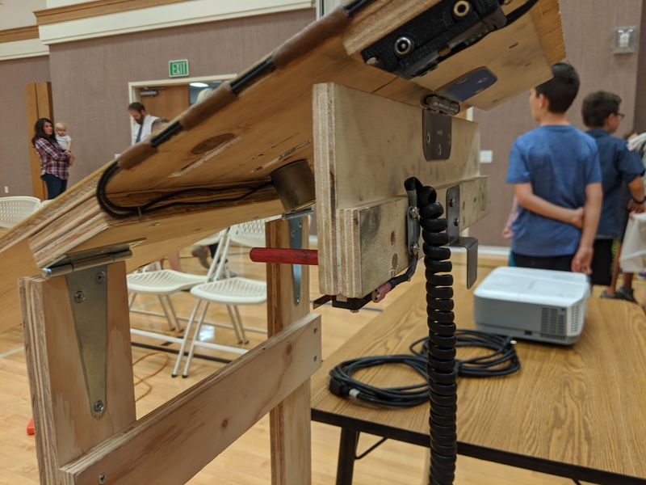
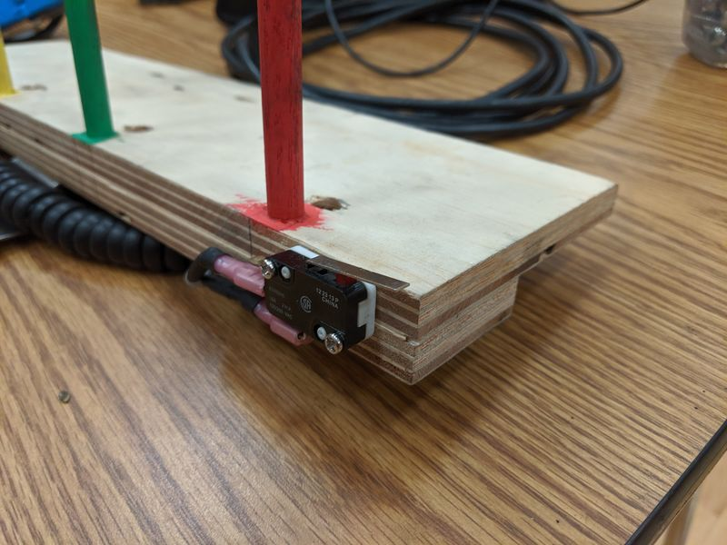
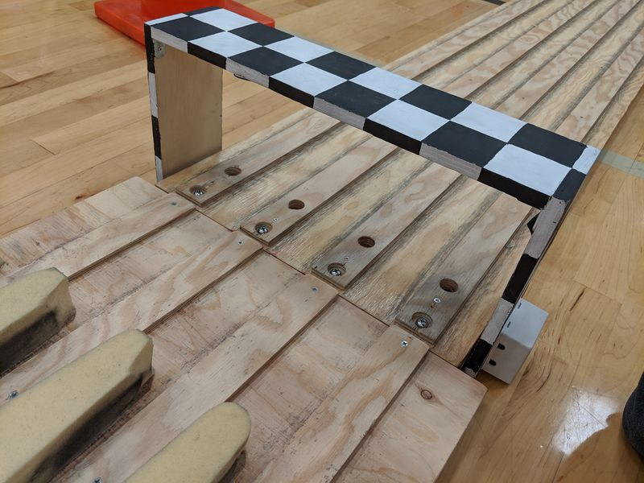

About the track
Our track has four lanes, and is 32 feet long. The starting gate is about 4 feet above the ground.

If you'd like to build your own track, this might help. But you should be prepared to improvise and adjust the plan to fit your needs. We took ideas from the plans here and here, and invented a few of our own ideas.
Here is the wood and major hardware pieces we used to build the track:
- 1/4" plywood, 4' x 8' (for the guide strips)
- (2) 1/2" plywood, 4' x 8' (for the track sections and other miscellaneous pieces)
- 3/4" plywood, 2' x 4' (for the connector plates and other miscellaneous pieces)
- 3/8" wood dowel
- (2) Gate hinge or equivalent
- (28) 1/4-20 x 1-1/4" pan head machine screws and washers
- (28) 1/4-20 T-nuts
- A large, haphazard collection of wood screws
Here are some of the essential tools and supplies needed:
- Table saw
- Drill press
- Router
- Hand drill
- Impact driver
- Measuring tape
- Carpenter's or speed square
- Wood glue

The track is built in four sections, each 8' long. The 1/2" plywood is used for the base of the track. Because this part of the track would be visible, we hand-selected the best looking sheets from Home Depot (this took a while). The 1/2" plywood is cut on the table saw into 15-3/4" widths. This yields three sections from the first piece of 1/2" plywood, and the fourth section from the second piece.
The 3/4" plywood is used to build the three connector plates which join the track sections together. Each plate is 8" by 15-3/4". On one side of the plate, the plate is screwed and optionally glued to the track section. On the other side, T-nuts and screws create a joint that can be dissassembled for storing or transporting the track. The plate is centered between the two sections, so that it overlaps each section by 4 inches.

Drilling holes in the connector plates
You will drill a total of 16 holes in each connector plate. The 8 holes on one side of the plate just need to be pilot drilled for the screws which will permanantly join the plate to one of the track sections. The 8 holes on the other side of the plate need to be drilled 1/4" for the machine screws that will create the removable joints. Position the holes directly under the centerline of each lane.
After drilling pilot holes and 1/4" holes in the connector plates, lay out two track sections and a connector plate upside down. Use clamps to hold the sections and plate together, and match drill through the track sections. You'll be drilling through the top of the track sections, but the guide strips will cover the holes. Then turn the assembly right side up and use the wood screws (and optionally, glue) to join one of the track sections to the plate, making sure to fully countersink the screws.
Next, enlarge the hole in the other side of the connector plate just enough to insert the T-nut. It is highly recommended to use a combination of epoxy and wood flour to glue the T-nut in place. (Take care not to get any glue on the threads.) This will create a very strong, permanant anchor for the machine screws when assembling the track. While the glue is setting, insert the screws to make sure the T-nut is aligned squarely.

Finished connector plate, showing how two track sections join together

Two track sections joined together
To make the guide strips, rip the 1/4" plywood into strips 1-5/8" wide. Sand the edges of the strips thoroughly, since the wheels of the cars will be rubbing against them. On the leading end of each guide strip, taper the width slightly so that wheels don't get caught in the event that the strips don't line up perfectly.
To install the guide strips, first assemble all of the track sections using the machine screws and washers. Once assembled, sand and finish the track for a flat, smooth surface. Then, starting at the top (starting line) of the track, line up the first guide strip and screw it to the track section using small wood screws about every 12". Do not glue the guide strip down, since it will make the track too rigid and the curvature will not be right. Whenever a guide strip passes over the head of a machine screw, drill a clearance hole large enough for the screw and washer. To account for the future curvature of the track, leave a 1/32" to 1/16" gap between the guide strips on the first two sections.

Attaching the guide strips
Now that the track and guide strips have been assembled, you can start working on the legs that will hold up the top of the track. This is where you can apply your creative license, as you'll also need to work in a starting gate into the design. You'll also need to ensure that everything can fold up nice and neat for storage. You should have some scraps from the 1/2" and 3/4" plywood that you can use to build legs and other features. By joining two pieces of 1/2" plywood with wood glue back-to-back, you can create a strong, sturdy 1" thick leg. It's good to have a second, shorter leg just before the first joint to keep the track from wobbling. Then, a removable cross piece joins the two legs together to keep them from getting kicked out and collapsing the track.

Main folding leg at start of track. Also visible is half of the starting gate hinge and the electromagnet.

Short folding leg between first and second track sections. Both legs fold flat for storage.
There are lots of ways to build a starting gate. We used a hinge with a removable pin, a piece of plywood, and 3/8" dowels to form the gate. Using the router, we cut slots in the track section and guide strips, which the dowels stick up through. When the gate swings down, the dowels fall below the track surface to release the cars. By removing the pin, we can store the starting gate separately so the track can lay flat in storage. We used an electromagnet to hold the gate up, but you can use a pull pin or any other number of creative methods to hold up the starting gate.

Detail of starting gate in the down, released position. The electromagnet power supply plugs into one of the jacks at the top of the picture, and the starting button plugs into the other. The starting switch signal is conveyed to the Arduino through the coiled cord.

Close up of the starting switch. When the gate is held up by the electromagnet, the switch is depressed. The Arduino then detects the moment the gate is released.
The finish line sensor assembly is built from plywood, with holes drilled to house the small electronics bits. You'll need to drill holes through the track for the IR beam. The wiring is discussed here.

Sensor assembly installed at the finish line. The last track section has holes drilled to allow the IR beam to pass through to the sensors. The brake plate uses memory foam to safely stop the cars.